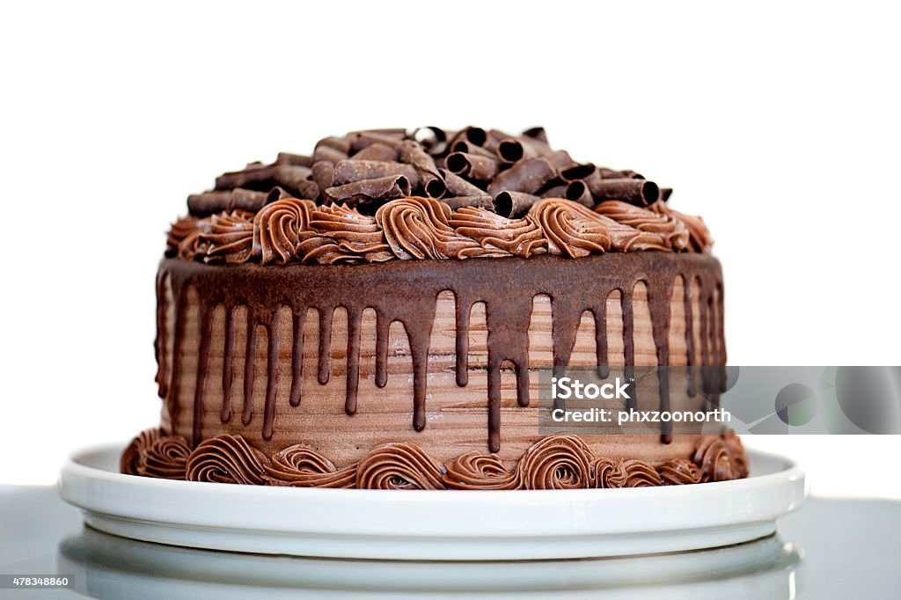

Bolo de Chocolate
| Dificuldade |
Porções |
Tempo de Preparo |
| Fácil |
10 fatias |
60 minutos |

Ingredientes
- 3 ovos
- 1 e 1/2 de chá de açúcar
- 2 xícaras de farinha de trigo
- 1 xícara de chocolate em pó
- 1/2 xícara de óleo vegetal
- 1 colher de sopa de fermento em pó
- 1 pitada de sal
- 1 xícara de água quente
Modo de Preparo
- Bata no liquidificador os ovos, o açúcar,
achocolatado
- Coloque a farinha de trigo os poucos
- Despeje a massa em uma tigela e adicione a água quente,
o sal e o fermento em pó, misturando delicadamente
- Despeje a massa em uma forma untada e asse em forno médio-alto (200°c)
preaquecido pod 40 minutos